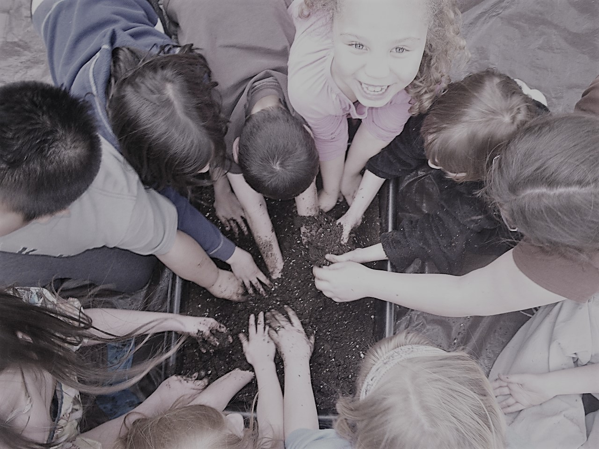

EDUCATION PROGRAMS
As a small and strongly community rooted organization in a region, we focus on initiatives that foster health, justice and food and energy resiliency in our own region, which has both tremendous economic and health needs and great potential to survive and thrive.

SOL(Seeds of Leadership) Garden for North Quabbin Teens
The Annual North Quabbin Food Forum held each February, that unites residents of our nine-town region to build community and food resiliency.
Grow Food Everywhere for Health and Justice
Our program that provides gardens to families and childcare centers in need of, and unable to afford fresh food, and wellness gardens at central community locations.
School Garden
workshops and resources
The North Quabbin Garlic and Arts Festival
A festival that we organize with our neighbors, a scent-sational, environmentally innovative event that ignites the cultural, local, economic, and agricultural vitality of our region.